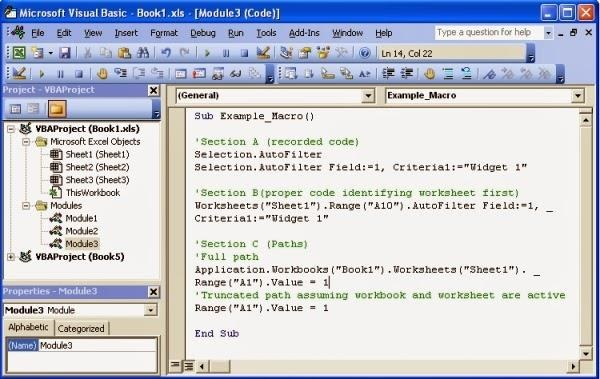

VBA é a sigla de Visual Basic for Applications, a linguagem de programação presente nos aplicativos do Microsoft Office. Isso significa que tudo o que fazemos manualmente no Office pode ser automatizado e quando falo em automatizar não é um luxo, é onde mora um dos maiores ganhos de produtividade que o Excel oferece.
Quando a macro faz diferença
Alguns exemplos hipotéticos mostram o tamanho do ganho.
- Você recebe todo dia uma planilha e precisa ajustar o formato, mudar algo no cabeçalho, imprimir e salvar com outro nome numa pasta de histórico.
- Toda manhã você abre a mesma planilha, consulta o site do Banco Central e digita a cotação do dólar e repete a rotina à tarde e à noite.
- Você precisa conciliar um volume enorme de lançamentos bancários e alguns são conciliados errado e outros esquecidos.
Poderíamos passar horas citando casos. Resumindo, tudo o que fazemos manualmente e de forma repetitiva pode ser automatizado e operações que tomam horas ou dias passam a levar alguns segundos depois de automatizadas com VBA.

Trabalhar com VBA exige experiência em programação e não é o caminho mais rápido para ganhar produtividade, mas não é um bicho de sete cabeças.
Alguns atalhos valiosíssimos
Como em qualquer ferramenta de alta produtividade, o Excel tem inúmeras teclas de atalho e estes são os que mais uso no dia a dia.
- CTRL+SHIFT+$ aplica o formato Moeda, CTRL+SHIFT+% o formato Porcentagem, CTRL+SHIFT+# o formato Data e CTRL+SHIFT+! o formato Número com duas casas e separador de milhar.
- CTRL+; insere a data atual e CTRL+SHIFT+: insere a hora atual.
- CTRL+SHIFT+Mais insere células, ou linhas, em branco e CTRL+Menos exclui as selecionadas.
- ALT+ENTER insere uma quebra de linha dentro da célula.
- F4 tem duas funções: aplica as âncoras ($) aos endereços da fórmula em edição, impedindo que mudem ao copiar e repete a última operação feita, por exemplo uma cor de fundo aplicada a outra seleção.
- CTRL+1 abre Formatar Células e CTRL+2, CTRL+3, CTRL+4 e CTRL+5 aplicam negrito, itálico, sublinhado e tachado.
- CTRL+D preenche para baixo, CTRL+R preenche para a direita, CTRL+H abre Localizar e Substituir, CTRL+B salva o arquivo e CTRL+F6 alterna entre janelas abertas.
- CTRL+ENTER, com várias células selecionadas, replica para todas a fórmula ou o valor digitado.
Dominar poucos atalhos já muda o ritmo de trabalho e escolher dois ou três para praticar esta semana é o melhor começo.